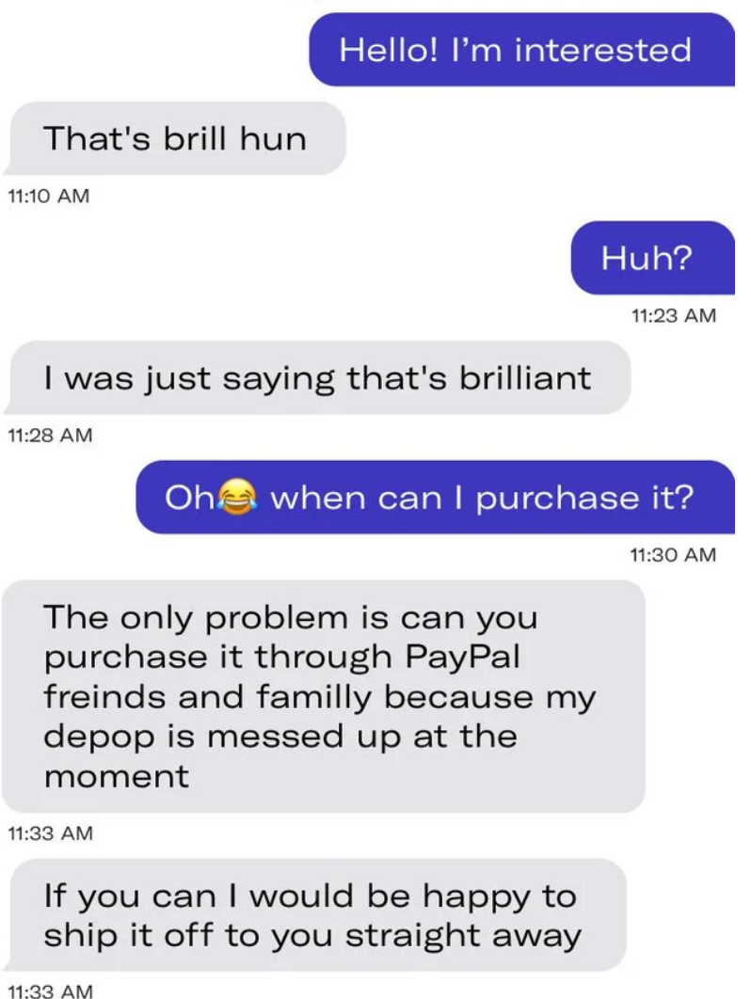
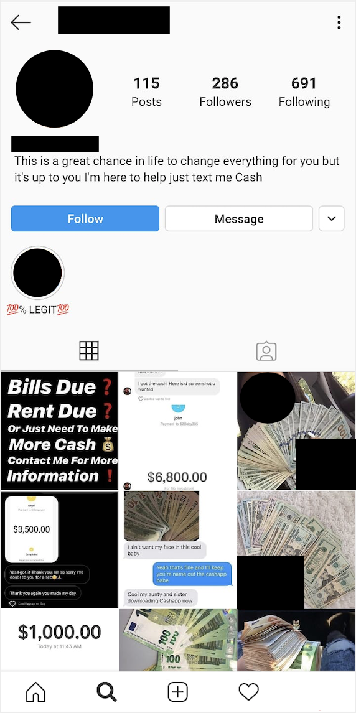

Social Scammers
Planted October 28, 2020
Reading time: 12 minutes
Tags:
#finance

Hey 👋
Long time no see! First of all apologies for this reaching you a week later than it should have, I was a bit busy settling into my new role at work.
In this issue, I wanted to cover social media and how scammers have been using it to their advantage. Social media is great, it has allowed us to connect to friends and family globally through a trying year. Unfortunately, it has also made it a lot easier for fraudsters to find people to deceive and steal their money via these same platforms.
This isn’t a topic strictly related to personal finance, but I’ve always believed that knowing how to protect your money from these common scams is something that should be more widely known. By working for a bank, I’ve come across a number of these scams before. I wanted to break down the three most common ones you’ll find on social media at the moment.
Advance Fee Scams 💸
Do you remember at the start of the lockdown how everyone wanted to get their hands on a Nintendo Switch?
A lot of people were told to stay at home and finding something to do to pass the time led to many exploring what video games had to offer. Combined with a supply issue for new consoles such as the Nintendo Switch, scammers used this shortage of consoles to their advantage. There was a flood of people looking to sell their games consoles, bikes, shoes and more through several different ways using the lockdown. eBay, Depop, Shpock, Instagram, Snapchat, Facebook Marketplace are just a handful of the platforms used.
Scammers will list items up for sale among legitimate items regardless of if they have the item or not - It is easy to find someone else’s photos and use those instead as a part of their scams! All they need to do is wait for someone to contact them about the item they have for ‘sale’ after posting the listing. Once someone falls for the bait, the social engineering begins.
If you are not familiar with the term social engineering I’ll provide a brief explanation. Social engineering is the act of manipulating someone into doing a task or action, such as sending a bank transfer or sharing their login details for certain websites. This is a crucial part of the scam as most of relying heavily on the use of social engineering.
In this scam, a buyer will usually be convinced to send a bank transfer and have the goods (e.g. a Nintendo Switch sent to them). What will happen is as soon as the scammer has received the money, they’ll simply move this to another account or withdraw it as cash at an ATM and then block the person they were speaking to. Worse, they might string the buyer along for a few days buying they more time to move the money while telling the buyer that they have ‘sent the item’, before later again blocking them. Ok, but where’s the social engineering element?
Before the payment is made, this will be the point where the scammer will try everything to convince someone to send them a payment. This can be in the form of showing additional photos of the item, telling them they live too far away from the buyer to meet face to face to sell the item or just telling the buyer to ’trust them because they are not a scammer’… It is also the point where if asked if the payment can be sent via a more secure method (such as the PayPal Goods & Services option) that the scammer will either say to the buyer to either send the payment via the ‘Friends and Family’ option, via bank transfer or simply say that they do not have a PayPal account. This again is preying on the fact that a lot of people do not understand the difference between the two options on PayPal.
PayPal’s Goods & Service option will offer a form of buyer/fraud protection and they charge a small amount of commission on the final sale value to provide this service. The friends and family option offers no such protection and thus does not charge a fee. If you end up buying an item via this way and it later turns out to be a scam, PayPal is unlikely to help you with this as they’ll state that the friends and family option is not meant to be used for buying goods and services.
The best way to avoid getting scammed over items like this over the internet is to either see the item first face to face with the seller before making the payment or using a platform (such as eBay, Depop, Shpock, etc.) that offers the ability to make your purchase via their payment platform (or via your bank details).
If a seller on these platforms tell you that their account is ‘not working’ or is ‘unable to receive’ payments (commonly seen on Depop for example) it’s best to see this as a red flag to not continue with the purchase as they will try to redirect you to make the payment via a method that will give you no buyer/fraud protection and ultimately a higher chance that you will be scammed.
 A screenshot from a Depop chat which is highly likely to be a scam via that I found on Reddit.
I wouldn’t look to buy via such methods and always look to make a payment using my card details via a payment portal/checkout provided by the app/platform for better protection. There’s a higher risk of purchases made via bank transfers (or PayPal friends and family) being a scam and if you end up sending money via these ways, it can be very difficult to recover any of the money sent.
Investment Scams 📈
This scam is also a common one but comes in many forms. The concept largely remains the same - Send the scammer some money and they promise to send you more money back. Action Fraud found that 164 Instagram users reported that they had collectively lost over £350,000 and that’s just from reported cases. The real amount lost is a lot higher as most of these types of scams go unreported due to victims not really being sure who to report these to or simply out of embarrassment of being scammed in the first place. Barclays has seen a 66% spike in scams in the first six months of the year with July seeing a 49% increase in the volume of investment scams. So how does this scam work and who is it that falls for them? Let’s first discuss how the scam works. Similar to Advance Fee scams, scammers will create social media profiles and then will post many photos and attempt to gain as many followers as possible to ‘build their brand’. The photos posted will be a glimpse of their ’luxury lifestyle’ - big houses, swimming pools, fancy cars, travel snaps, parties and often stacks of money to entice people into wanting a similar lifestyle. They’ll also usually hide their face or could go a step further and impersonate someone else by using photos from someone else’s public accounts.
 An example of what a scammers Instagram account might look like.
They’ll either then reach out to their victims or simply wait for their victims to contact them. When questioned how it all works, most of these scammers have a script filled with confusing jargon (talking without really saying anything as I like to call it) to make what they do sound more legitimate while claiming to be an expert, having screenshots of trading as proof (again, can be faked easily) and having ‘good reviews’. These reviews they provide are fairly easy to fake - It just requires making a handful of additional social media accounts to send direct messages back and forth with and then taking screenshots of those conversations.
Common words used in these types of messages include forex, bitcoin, trading, signals, and options along with the promise of a high or guaranteed return. Something to note about the last point is that investments of any type never guarantee any form of returns. The world’s best investor, Warren Buffet is unable to guarantee a return from their investments, it’s highly unlikely someone you found on Instagram can.
These lengthy descriptions are used to confuse people who might not be as aware as to how investing, trading or cryptocurrency work. The main part that will lure them in is the high return of what they could make. Once the scammer has said enough to convince the victim, they’ll ask them to make a bank transfer for as much as they can convince the victim to sent and as fast as they can.
After the first payment is sent, they have the victim fully hooked and will demand further payments for activation fees, management fees, transfer fees and so on until the victim realises that they fell for a scam. At this point, the victim will feel stuck and see the only way to get their money back is to send these further payments to ‘unlock’ their profits or to start a refund. After these payments are made, the scammer simply blocks the victim and transfers the money away as fast as they can to avoid getting caught.
The question now is who even falls for a scam like this? I like to visualise it as two groups of people; the first are those that are lured in by greed and the second are those that desperately need money.
The former is self-explanatory. They are individuals hoping to make money quickly and do not understand or check how these returns are made or simply do not care. There is likely an element of naivety at play as well so they are just willing to trust someone they meet over social media. These individuals tend to learn the hard way that not everyone on the internet is their friend and wants to help them after unfortunately being scammed themself.
The latter group make up the majority of those that end up getting scammed. Those in need of money tend to be on a lower income or are vulnerable in one form or another that which in turn can lead to financial vulnerability. The appeal of these scams to this group of people is the possibility that the opportunity presented to them could be legitimate and how the additional money can be of a great benefit with them. Hope is what the fraudsters will prey on with these types of victims and they won’t hesitate to take advantage of it. Scammers will frequently apply pressure to both groups of people to force their hand into sending them payments without really understanding the consequences of doing so.
Investment scams are normally advertised via social media platforms such as Instagram, Twitter, Snapchat, Facebook. TikTok and so on. Real investment firms and traders do not offer their services via direct messages on such platforms or on shady-looking websites. It’s best to always check if the firm or individual that you are speaking to is registered under the Financial Conduct Authority’s (FCA) register to check if the firm is regulated by the FCA and if there are any signs of such opportunities being a scam and if the investment opportunity is too good to be true then it often is. At the time of writing this post, I found that there is someone that recently lost £250,000 via one of these forex scammers 😬
How I like to think of it is if someone could turn, for example, £500 into £5000, why do they need you? Surely if it was legitimate would this person not just put their own £500 get £5000 back out and then just repeat the process but this time with 10 lots of £500 to make £50,000 and so on? Why would they need your money or show you how to achieve this?
Money Mules 🐴
The third type of scam you’ll come across are the ones where scammers promise a sum of money in exchange for using your bank account to send/receive some money. This is called money laundering - Fraudsters will want to move their money through these accounts to then send on to other accounts to conceal the money they obtained. This money can be associated with some severe crimes such as illegal fraud, human trafficking, corruption, kidnapping and even extortion. By helping they mule this money, you’re committing a crime. Again, a similar approach is taken on social media to recruit people for this scam - Get in touch with victims, convince them to hand over their bank details, and then use them to launder the money or by telling the victim to withdraw the money as cash and then handing it over to the scammer while keeping a cut of the money themself. A key indication of people involved in money muling and looking to recruit others is the language they will use, often stating that the opportunity is a limited time offer and how the payout is fast, instant or risk-free. A money mule can lose access to financial services (such as bank accounts) and a convinced money mule could also serve up to 14 years in prison. This type of scam/fraud is targeted heavily at young people and university students. Surprising the number of 14-18 year-olds involved in this type of fraud has risen by 73%!
A quick search on youtube shows a number of videos warning others not to fall a victim to this scam and how it can affect the rest of their lives.
 I found Fintrail’s blog posts on how social media is used to further financial crime on money mules an interesting read - I recommend giving this a look over when you have the time to learn more about money mules.
I found Fintrail’s blog posts on how social media is used to further financial crime on money mules an interesting read - I recommend giving this a look over when you have the time to learn more about money mules.
The same principles from spotting the other two scams also apply here. It’s also important to never share your banking details such as your card details, online banking login information or card PIN with anyone or to make transactions or transfers when instructed by someone else in such situations.
Summary
That’s it for this issue. I hope I’ve highlighted the importance of what to be aware of in these common scams and how you can avoid them. Scams of these nature can affect anyone including people you know. If you want to protect yourself and others from scams I recommend reading up more on the matter (you won’t have trouble finding articles online) and if you want to help your friends and family as well, consider forwarding this email to them as a starting point.
I’ll see you all again, two weeks from now with another issue of Akash & Money 👋
If you liked this post, consider buying me a coffee to show your support! ☕